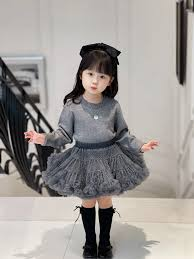

.jpg)

Kids Latest Edition
Latest Edition
Generally refers to either the berry-flavored Red Bull (often described as tasting like raspberry/forest fruits) or Berries Weekend, a popular, affordable, and vibrant floral-citrus perfume.
ksh 120010% OFF
Summer Edition
A, feminine fragrance, often compared to fruity-floral scents. It includes notes of tangerine, lychee, rose, peach blossom, and peony. It is generally considered a good, long-lasting, and affordable option.
ksh 1003% OFF

Pinkish Edition
Features a strong, sweet raspberry and forest fruit flavor profile. Reviews note it has a, at times, polarizing, intense,, and artificial, "vape-like" aroma, but many find it a tasty, refreshing drink.
ksh 8002% OFF
Materials That Made The Latest Edition
- Threads
- Fabric
- A seam ripper
- Used a sewing machine to be completed
Based on late 2025 and early 2026 fashion forecasts, the latest clothing trends are a dynamic blend of comfort-driven, nostalgic, and bold styles, often prioritizing individuality over strict, fleeting fads. Key themes include a return to 1980s maximalism, Y2K nostalgia, and practical, "cozy" fashion, with a strong focus on sustainable and versatile, long-lasting pieces.
Best of all


Key Aspects of Readymade Clothing:
- Convenience & Speed: Available immediately in stores or online, eliminating long wait times for custom tailoring.
- Variety & Trends: Offers a vast, changing selection of styles, colors, and designs for all seasons, often reflecting current fashion trends.
- Standardized Sizing: Produced in standard sizes (S, M, L, XL, etc.), which allows for mass production, though this often means they may not fit all body types perfectly.
- Cost-Effectiveness: Generally more affordable than tailored or bespoke clothing, notes
- Quality Variations: Quality ranges from fast-fashion (lower durability) to high-end designer, notes
Fashionate African Clothes

African cloth refers to the vibrant, historically rich textiles that represent the culture, emotions, and stories of various African communities, often characterized by bold colors like red (symbolizing passion, political struggle, or protection). These fabrics are not merely fashion items but are used as a form of non-verbal communication, with patterns and colors conveying messages about the wearer's social status,, marital status, or history.African cloth refers to textiles that are deeply rooted in heritage, symbolism, and vibrant artistic expression, often handmade or featuring rich, story-telling patterns. Several types of African textiles embody this description, ranging from traditional, hand-dyed mud cloth to vibrant, modern prints.
About Us
In this page at the fashion and design industry is designed to tell a compelling story that connects a brand's creative vision with its target audience. It goes beyond just selling clothes; it defines a brand's identity, values, and purpose.
Contact Us
Stay Connected


In the 21st century, staying connected has evolved from a luxury into a fundamental necessity, driven prizmarily by the internet and social media, which allow people to bypass geographical barriers and maintain instant communication. Technologies like video conferencing, messaging apps.